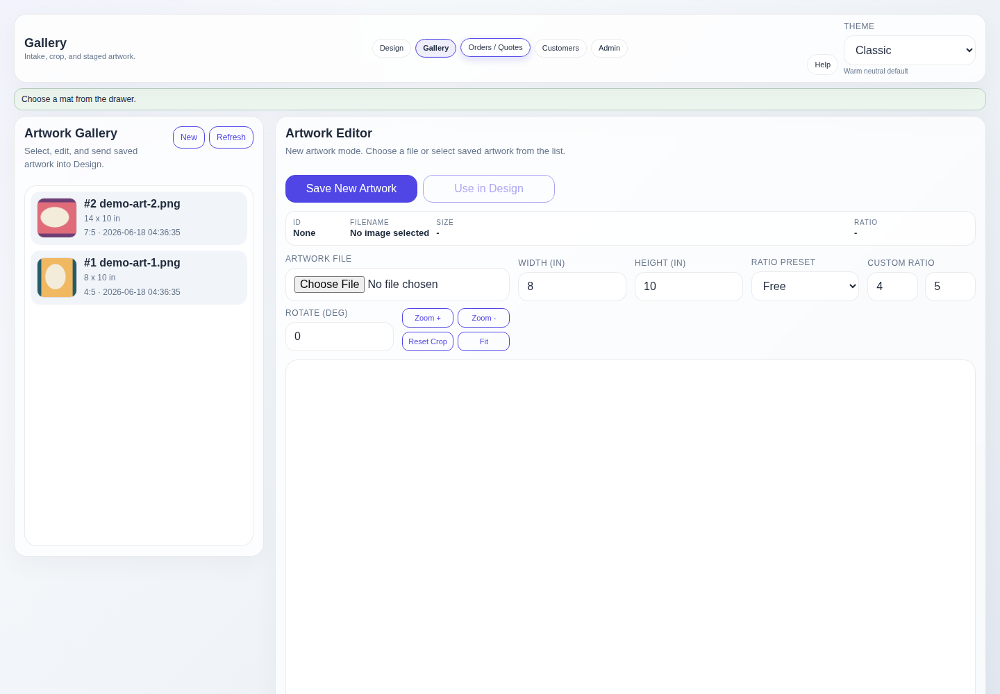

Stage the artwork first
Gallery & Intake
Gallery keeps image intake and crop work separate from quote building. The saved artwork list is on the left; the focused editor is on the right.
Add new artwork
- Choose the file. Select a JPG or PNG from the workstation.
- Enter physical dimensions. Record the actual artwork width and height in inches, not the image's pixel dimensions.
- Set orientation and crop. Use rotation, ratio, zoom, and pan controls until the crop represents the intended framed view.
- Save the intake record. Select Save New Artwork. The original upload and crop metadata are stored locally.
- Send it to Design. Select Use in Design to carry the image, dimensions, and crop rectangle into the mockup.

Edit saved artwork
Select the saved image
Choose an item from the left list. Its recorded size, ratio, rotation, zoom, and crop position return to the editor.
Update metadata
Change the framing view, then select Update Artwork. Existing crop edits are metadata-only; the original saved file stays intact.
Rotation behaves differently during intake and later editing.
Rotation on a new upload saves the file in that orientation. Rotation on saved artwork is stored as metadata and applied when Design renders the image.
Crop controls
- Zoom In and Zoom Out change the image beneath the crop window.
- Reset Crop returns the current crop adjustment to its starting position.
- Fit Artwork restores a full-image view when the crop has become too tight.
- Ratio presets constrain the crop to common framing proportions; free mode allows an unconstrained crop.
- The Design mockup honors the saved crop rectangle instead of simply center-cropping the whole image.
Intake check
- Make sure the physical size matches the customer's artwork.
- Confirm the crop does not remove important content.
- Use a clear filename or recognizable thumbnail so the image is easy to find later.
- Select Use in Design only after the crop metadata is saved.